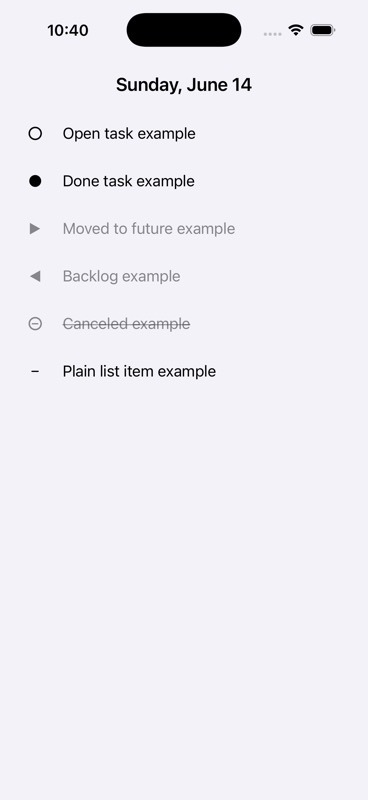

Date header
Tap opens section controls. Touch and hold opens the calendar sheet for changing day.
rivene keeps controls close to the log: date controls in the header, state controls on the marker, editing on the text, capture in the blank space, and quick review on Watch.

Four compact maps cover the iPhone daily log, entry rows, planning page switcher, and Watch companion.
Tap opens section controls. Touch and hold opens the calendar sheet for changing day.
Tap toggles latched speech capture. Touch and hold records while held. Double tap creates a blank editable entry.
Speech appears at the bottom, then commits into Markdown when recording stops.
Tap entry text to edit in place. Return commits; an empty committed row deletes itself.

Open and done entries quick-toggle. Moved, backlog, canceled, and detail rows stay preserved.
Touch and hold the marker to open the state menu, then tap or slide to open, done, moved, backlog, canceled, or detail.
Swipe right to flag and move an entry up. Swipe left to delete.
Touch and hold row text, then drag to reorder the Markdown lines.
Tap the date to switch between Daily Log, Index, Projects, Journal, Habit Tracker, Future Log, and Backlog.
Touch and hold the date to pick another day, then Done returns to the selected log.
Non-daily-log pages are visible destinations while the current build keeps their bodies intentionally quiet.
Tap Record to focus the watch dictation field.
Dictate or type into the field. The Add control appears once there is text.
Tap an open or done row to toggle it. Deferred, backlogged, canceled, and detail rows remain log context.
Every touch ends by keeping the Markdown readable.